The Chaotic Caves — previews
Halfling Home — level 1
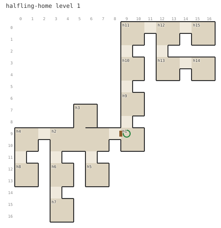
Synthesized map Page 21
Page 21Cave of Horrors — level 1
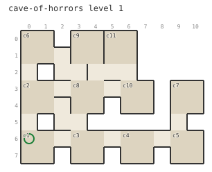
Synthesized mapPage 21Crypt — level 1
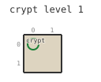
Synthesized mapThe survey recorded no map pages for this level.
A. Orc Lair — level 1
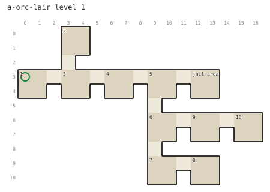
Synthesized map Page 38
Page 38B. Orc Lair — level 1
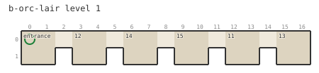
Synthesized mapPage 38C. Hobgoblin Lair — level 1
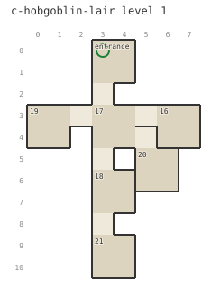
Synthesized mapPage 38D. Abandoned Crypts — level 1
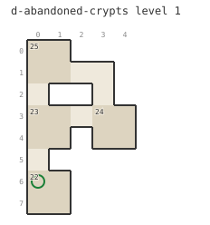
Synthesized mapPage 38E. Goblin Lair — level 1
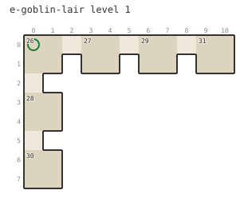
Synthesized mapPage 38F. Bandit Lair — level 1
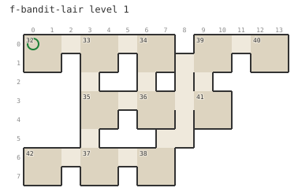
Synthesized mapPage 38G. Kobold Lair — level 1
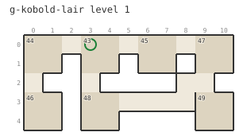
Synthesized mapPage 38H. Lizard Man Lair — level 1
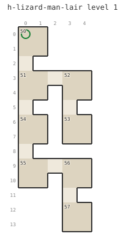
Synthesized mapPage 38I. Bugbear Lair — level 1
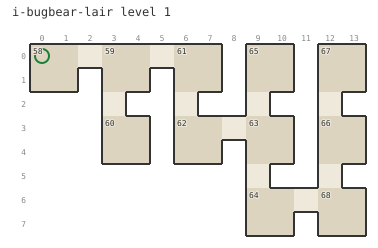
Synthesized mapPage 38J. Gnoll Lair — level 1
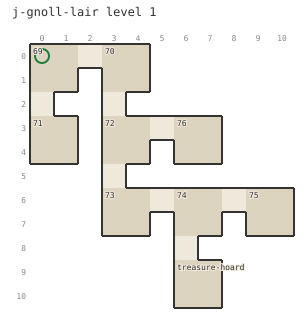
Synthesized mapPage 38The Abandoned Manor — level 1
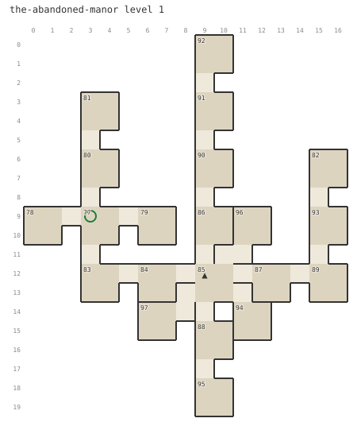
Synthesized map Page 46
Page 46The Abandoned Manor — level 2
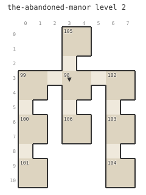
Synthesized map Page 47
Page 47